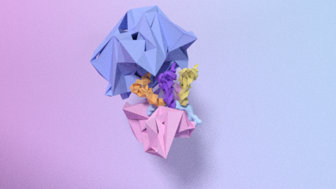
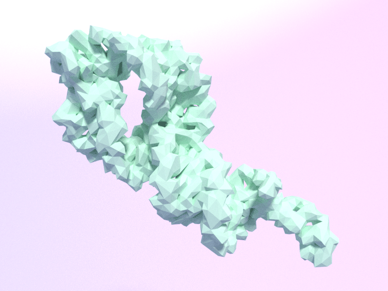

Info
I am a PhD student in the Smolke lab within the Stanford University Bioengineering department.
My interests are synthetic biology, RNA, equity and justice.
I helped cofound Science Action Committee to organize scientists around political issues
Email me at mtskpln @ gmail.com or follow me @mtskpln on twitter
Science
I work on ribozymes to better understand how RNA sequence affects function.
I once made an emoji translator based off this tweet.
Previously I worked on the structure and dynamics of Cas9 and AAV
Art
Structural biology allows us to view the molecular world of biology. These illustrations are created using structures found on the Protein Data Bank.
Translating Ribosome
Hammerhead Ribozyme
S. pyogenes Cas9